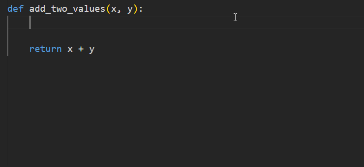

Getting Started with VS Code
Open VS Code and then use
File > Open Folderto open the project folder e.g.hello-worldfolder on your computer (Microsoft Learn (2023)).Now, in the
Explorer view: hover over the title bar and selectNew File.Name the new file
hello.pyby entering it into the new toolbox and pressingEnter.Enter the
print('Hello, World!')Python code in the editor panel. This command uses the print function to display the text Hello, World! when your application is run.Save the file by selecting File and save option.
Now, you are ready to explore and code fun in VSCode.
Run your application
Since it’s a single line program, you can actually run your application from inside VSCode. Before that select the Python interpreter, by opening the Command Palette (Shift + Command + P (Mac) / Ctrl + Shift + P (Windows/Linux)), start typing the > Python: Select Interpreter command to choose the Python interpreter or enter the Path to the Python interpreter.
> Python: Select Interpreter will present a list of interpreters that are availabel on your system, those can be used for your project. Best, select the one that you installed recently.
Via Terminal:
- Open the built-in terminal in VSCode by selecting View and Terminal.
- In the new terminal window, run the
python hello.pycommand to run your Python code.Hello, World!appears in the terminal window.
Adding Docsrting to your Program
There are several formats to add to add documentation to your program, some most popular ones are:
- sphinx
- pep257
We will use a custom.template to add documentation to your program. Download the custom template and follow the steps to add it to VS code.
After downloading the custom.mustache file, open the
Settings editor, use the following VS Code menu command:- On Windows/Linux - File > Preferences > Settings
- On macOS - Code > Preferences > Settings
When you open the Settings editor, you can search and discover the settings to look for
AutoDocString.Find the option:
Auto Docstring: Custom Template Pathand enter the file path to custom docstring template filecustom.mustache(File path can be absolute or relative to the project root.)To add the docstring, first create the function e.g. a python function to add two integer values, as given below:
def add_two_values(x, y): return x + yTo generate the docstring, place the cursor in the line directly below the function definition (i.e. below the def keyword) and perform any one of the following steps:
Start the docstring with either triple double or triple single quotes and press the Enter key
Use keyboard shortcut
CTRL+SHIFT+2for windows orCMD+SHIFT+2for macOS.
This will populate the function body in the following manner. The description, usage, and type are placeholders that we need to replace with actual descriptions.
autoDocString can populate the type placeholder automatically by inferring parameter types